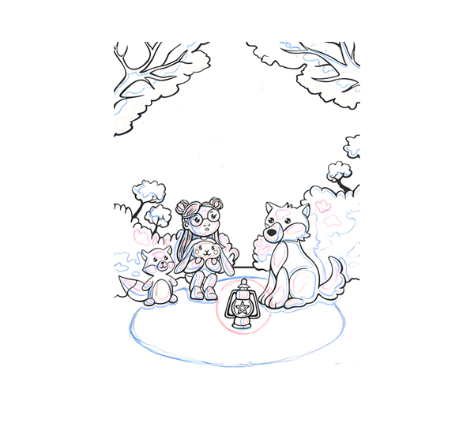

Lueurs dans la nuit, c’est la couverture d’un album jeunesse fictif où une petite fille déambule dans la forêt en compagnie de petits animaux mignons. Ce projet me permet de récapituler les différentes étapes par lesquelles je passe lors de la réalisation d’une illustration vectorielle (ici, en pleins et déliés).
Je définis le sujet, et projette une première idée de composition sur le papier. Je n’utilise que le critérium et la gomme pour l’instant.
Je corrige la composition, et dessine mes pleins et déliés. Je fige le tracé définitif à l’aide de feutres fins noirs.
Je trace à la plume sur le logiciel Illustrator les parties noires, puis les parties blanches de mon illustration. Je ne dessine donc pas des contours mais donc des formes noires, sur lesquelles je superpose les formes blanches.
Comme ce projet est destiné à l’impression, je choisis mes nuances de couleurs via un nuancier papier. Ici, je me base sur une palette restreinte utilisant les deux complémentaires jaune et violet.
À nouveau sur le logiciel Illustrator, je créé ma palette de couleur, avant de placer tous les aplats de couleur.
L’ajout d’ombres et de lumières aide à sculpter davantage les personnages et le décor.
Je les dessine préalablement sur le tracé papier, avant de les créer sur le fichier Illustrator.
Enfin, j’ajoute les dernières touches : dégradés, ornements, titrage etc. L'illustration est terminée.